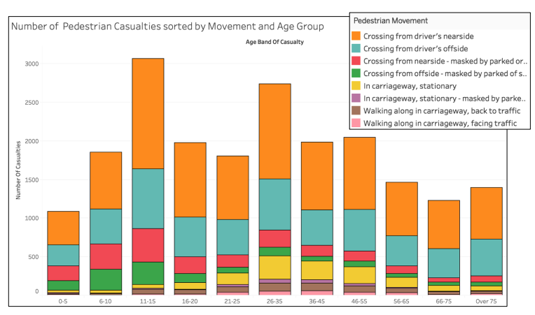
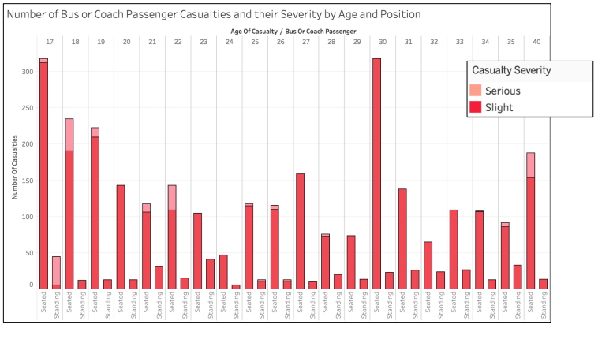
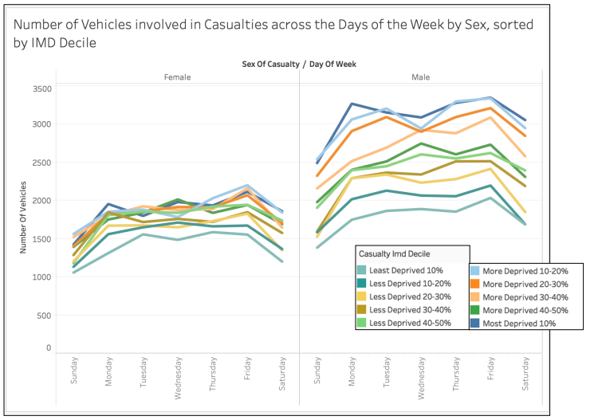
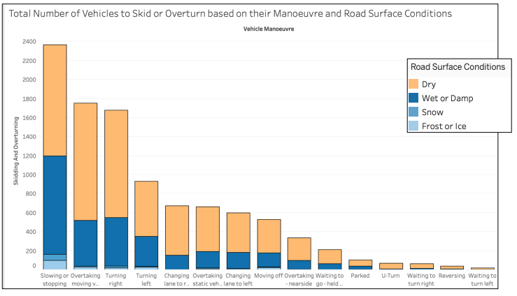
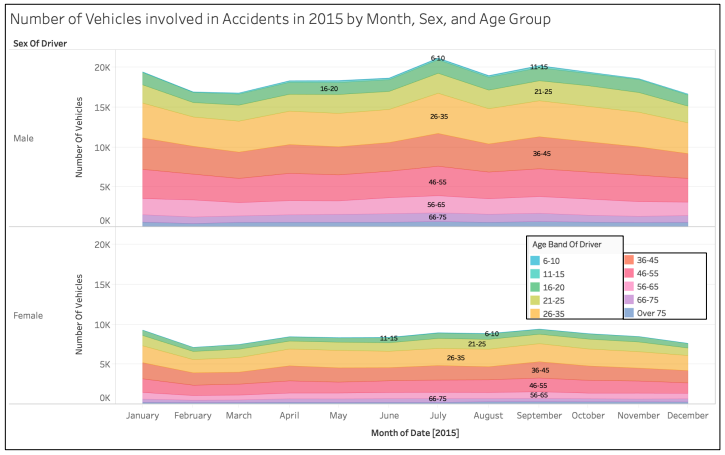
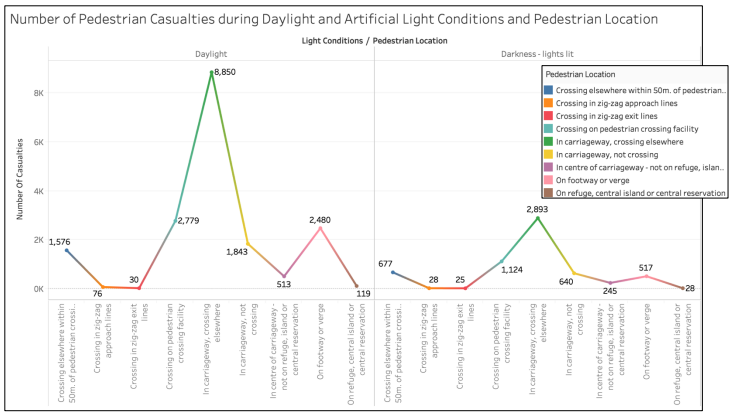
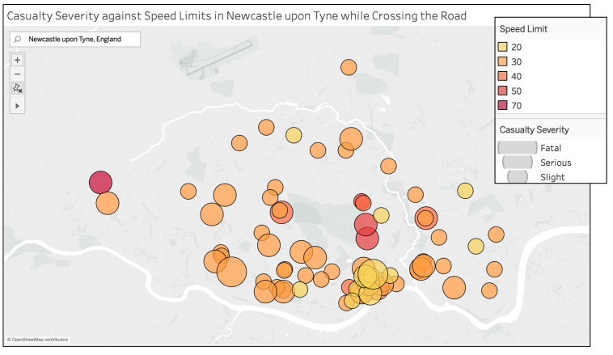
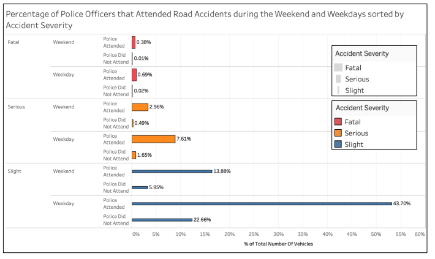
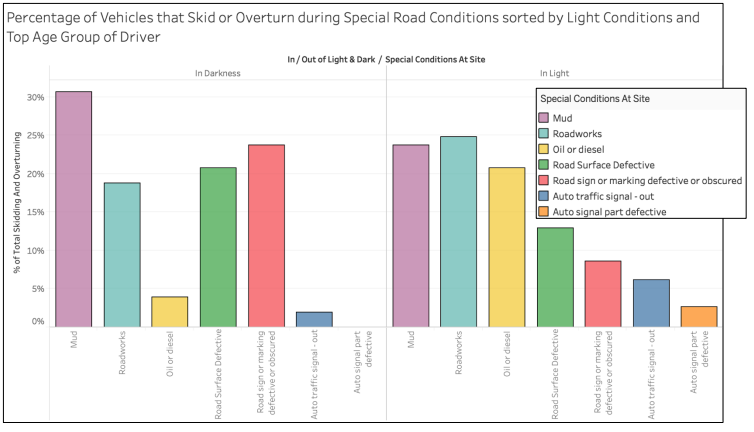

Road Accident Data Analysis
Exploring a dataset relating to Road Accidents in the UK
In this project, I have used Tableau to explore and visualise insights into road accidents in the UK.
This project was part of my Bachelor's Degree coursework.
Data Source
Number of Pedestrian Casualties sorted by Movement and Age Group

Percentage of Pedestrian Casualties in the Top 10 Counties in the UK

Number of Bus or Coach Passenger Casualties and their Severity by Age and Position

Number of Vehicles involved in Casualties across the Days of the Week by Sex, sorted by IMD Decile

Total Number of Vehicles to Skid or Overturn based on their Manoeuvre and Road Surface Conditions

Number of Vehicles involved in Accidents in 2015 by Month, Sex, and Age Group

: Number of Pedestrian Casualties during Daylight and Artificial Light Conditions and Pedestrian Location

Casualty Severity against Speed Limits in Newcastle upon Tyne while Crossing the Road

Percentage of Police Officers that Attended Road Accidents during the Weekend and Weekdays sorted by Accident Severity

Percentage of Vehicles that Skid or Overturn during Special Road Conditions sorted by Light Conditions and Top Age Group of Driver
